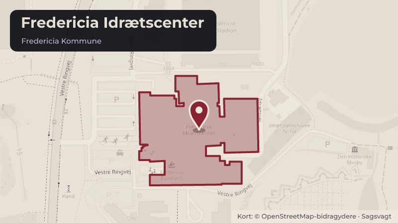

Besluttet 22. juni, Kultur-, Turisme-, Idræts- og Bosætningsudvalget, Fredericia
Udlejning af areal ved Fredericia Idrætscenter til FC Fredericia
FC Fredericia har rettet henvendelse med ønske om at leje dele af arealet ”Dronningepladsen” ved Fredericia Idrætscenter til etablering af træningsbaner.
Steder i sagen: Fredericia Idrætscenter

Har du et billede fra Fredericia Idrætscenter? Send det til os
Kort fortalt
- Forslaget
- Midlerne administreres i Kultur- og Idrætsforvaltningen.
- Hvem
- Kultur-, Turisme-, Idræts- og Bosætningsudvalget, Fredericia Kommune
- Hvornår
- Mandag 22. juni 2026
- Status
- Besluttet. 1. -6 Et flertal bestående af Venstre, Dansk Folkeparti og Liberal Alliance anbefaler indstillingen. Socialdemokratiet undlod at stemme. De Konservative og Enhedslisten stemmer i mod, i det de økonomiske forhold ikke er belyst tilstrækkeligt.
Læs hele sagen Kommunens egen tekst
Sagsfremstilling
FC Fredericia (FCF) har rettet henvendelse til Fredericia Kommune med henblik på at leje dele af arealet
”Dronningepladsen” ved Fredericia Idrætscenter (FIC) til etablering af træningsbaner. Sagen belyser vilkår
for udlejning samt mulige alternative placeringer for de nuværende aktiviteter på arealet.
FCF råder i dag ikke over træningsfaciliteter, der lever op til kravene for professionel fodbold. Etablering af
nye træningsbaner vurderes derfor som en forudsætning for klubbens fortsatte sportslige udvikling. På grund
af den nære placering til stadion og FIC vurderes ”Dronningepladsen” at være den mest hensigtsmæssige
placering.
Dronningepladsen anvendes i dag som koncert- og eventområde. En udlejning af dele af arealet til
træningsbaner vil indebære, at pladsen fremover ikke vil kunne rumme koncerter og events i sin nuværende
form. Det vil derfor være nødvendigt at etablere eller indrette en alternativ koncert- og eventplads til dette
formål.
Pladsen anvendes i dag bl.a. til den årlige Metal Magic Festival samt større enkeltstående arrangementer
som Harley-Davidson-arrangementet ”Super Rally”. Der har været dialog med arrangørerne af Metal Magic
Festival om fremtidige placeringsmuligheder. I samarbejde med arrangørerne er der peget på en mulig
midlertidig placering i regi af FIC, som de har til rådighed indtil anden fremtidig løsning er etableret. Det er en
forudsætning for en midlertidig løsning, at arrangørerne holdes økonomisk neutrale i forbindelse med en
eventuel flytning, herunder i forhold til merudgifter til eksempelvis indretningen af pladsen, vand, el og øvrig
infrastruktur, samt at arbejdet med udvikling af en ny eventplads igangsættes. Siden 2018 er der investeret i
udviklingen af Dronningepladsen, herunder etablering af kloak og vandforsyning. Fredericia Kommune har
samlet investeret ca. 1,600 mio. kr. i pladsen.
Såfremt arealet udlejes til FCF, vil følgende vilkår være gældende:
FCF afholder alle udgifter til etablering og drift af træningsbaner, herunder nødvendige adgangsveje
og andet.
FCF yder et bidrag til etablering af en ny koncert- og eventplads på 1,0 mio. kr. ud over lejen.
Bidraget afdrages over en 2-årig periode.
Der indgås en lejekontrakt med en varighed på 20 år.
Arealet udgør ca. 17.000 m².
Lejen fastsættes til markedsleje, der pt. udgøres til 20 kr. pr. m², svarende til en årlig leje på ca.
Økonomiske konsekvenser
Der er i budget 2026 ikke afsat midler til anlægsbevilling til træningsbaner til FCF. Der søges
derfor om tillægsbevilling og frigivelse af 2,020 mio. kr. i henhold til nedenstående tabel.
Tekst
(beløb i mio. kr.)
Træningsbaner ved
Dronningepladsen(XA40170)
TB
TB
TB
Bidrag FCF
Huslejeindtægter
I alt (- = kasseindlæg/+=
kasseudlæg)
Anlægsbevilling
Frigivelse
Finansiering 2027 - 2029
Med en bevilling på 2,020 mio. kr. svarer det til bevillingen på den gamle koncert- og
eventplads på Dronningepladsen samt 0,420 mio. kr. til dækning af flytningen af Metal Magic i
Koncert- og eventplads
Der ikke er foretaget en forudgående vurdering af, om de 1,600 mio. kr., der oprindeligt er
anvendt på Dronningepladsen, er tilstrækkeligt til at etablere en ny koncert- og eventplads et
andet sted. Hvis en ny koncert- og eventplads koster mere end 1,600 mio. kr., skal der tages
stilling til hvorledes merudgiften skal dækkes.
Vurdering
Forvaltningen vurderer, at etablering af træningsfaciliteter på Dronningepladsen vil understøtte FC
Fredericias fortsatte udvikling som professionel fodboldklub. Det vurderes samtidig, at en udlejning vil have
væsentlige konsekvenser for anvendelsen af Dronningepladsen som koncert- og eventplads. Forvaltningen
vurderer derfor, at det vil være nødvendigt at etablere en midlertidig løsning, så Metal Magic Festivallen kan
afholdes, og at der igangsættes undersøgende arbejde for etablering af en ny koncert- og eventplads, hvis
arealet udlejes.
På baggrund af dialogen med arrangørerne af Metal Magic Festival vurderer forvaltningen, at der kan
etableres en midlertidig løsning, som tilgodeser de nuværende aktiviteter, forudsat at arrangørerne holdes
økonomisk neutrale.
Forvaltningen vurderer endvidere, at det er hensigtsmæssigt, at FC Fredericia bidrager økonomisk til
etablering af en ny permanent koncert- og eventplads.
Det anbefales, at både lejeindtægter og bidrag fra FC Fredericia tilgår kultur- og idrætsområdet med henblik
på finansiering af den midlertidig løsning samt planlægning og etablering af en ny permanent koncert- og
eventplads.
Indstilling
Forvaltningen indstiller til Kultur-, Turisme-, Idræts- og Bosætningsudvalget at anbefale
Økonomi- og Erhvervsudvalget at anbefale byrådet, at:
1. udlejningen af arealer til træningsbaner til FC Fredericia godkendes.
2. arbejdet med forundersøgelse og udvikling af en ny eventplads igangsættes i
samarbejde med relevante aktører, og at det endelige projekt skal politisk besluttes.
3. lejeindtægten og anlægstilskud til ny koncert- og eventplads anvendes som
investering i anlæg af en ny plads og til at afholde ekstraudgifter til Metal Magic i
forbindelse med den midlertidige placering af festivalen.
4. at midlerne administreres i Kultur- og Idrætsforvaltningen.
5. budget og bevillinger tilrettes med de i afsnittet "økonomiske konsekvenser" anførte
ændringer.
6. der afsættes rådighedsbeløb som beskrevet i afsnittet økonomiske konsekvenser og
at rådighedsbeløbet frigives.
Beslutning
1. -6 Et flertal bestående af Venstre, Dansk Folkeparti og Liberal Alliance anbefaler
indstillingen.
Socialdemokratiet undlod at stemme.
De Konservative og Enhedslisten stemmer i mod, i det de økonomiske forhold ikke er
belyst tilstrækkeligt
Kilde: Fredericia Kommune, Kultur-, Turisme-, Idræts- og Bosætningsudvalget, referat fra mødet mandag 22. juni 2026, punkt 2. Læs den originale sag hos kommunen.